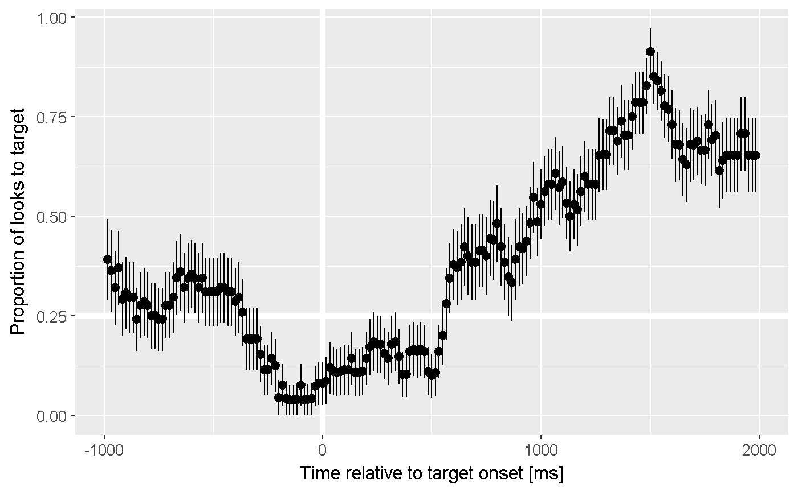

Aggregate the number of looks to each response type over some grouping variables like Subject, Time, Condition.
aggregate_looks(data, resp_def, formula) aggregate_looks2(data, resp_def, resp_var, ...)
| data | a long data frame of looking data |
|---|---|
| resp_def | a response definition or a list of response definition. |
| formula | an aggregation formula. The lefthand terms will be grouping variables, and the righthand term is the column with eyetracking responses. |
| resp_var | Name of the column that contains eyetracking responses |
| ... | Grouping columns. |
a dataframe of the grouping columns along with the number of looks to each response type, the proportion (and standard error) of looks to the primary response, and the proportion (and standared error) of missing data.
This function is the main tool for preparing eyetracking data for a growth
curve analysis. For example, an aggregation formula like Subject + Time ~ Gaze would provide the number of looks to each image over time for each
subject.
aggregate_looks() uses an aggregation formula like
stats::aggregate(), whereas aggregate_looks2() uses column names.
target_def <- create_response_def( label = "looks to target", primary = "Target", others = c("PhonologicalFoil", "SemanticFoil", "Unrelated"), elsewhere = "tracked", missing = NA) four_image_data %>% aggregate_looks(target_def, Subject + TrialNo ~ GazeByImageAOI)#> # A tibble: 24 x 15 #> .response_def Subject TrialNo PhonologicalFoil SemanticFoil Target #> <chr> <chr> <int> <dbl> <dbl> <dbl> #> 1 looks to target 001P 1 232 80 250 #> 2 looks to target 001P 2 181 93 242 #> 3 looks to target 001P 3 79 101 231 #> 4 looks to target 001P 4 188 135 123 #> 5 looks to target 001P 5 90 170 164 #> 6 looks to target 001P 6 70 198 172 #> 7 looks to target 001P 7 83 47 109 #> 8 looks to target 001P 8 60 63 77 #> 9 looks to target 001P 9 71 50 50 #> 10 looks to target 001P 10 57 305 150 #> # ... with 14 more rows, and 9 more variables: Unrelated <dbl>, #> # Elsewhere <dbl>, Missing <dbl>, Others <dbl>, Primary <dbl>, Looks <dbl>, #> # Prop <dbl>, PropSE <dbl>, PropNA <dbl>four_image_data %>% aggregate_looks(target_def, Subject ~ GazeByImageAOI) %>% str()#> Classes 'tbl_df', 'tbl' and 'data.frame': 1 obs. of 14 variables: #> $ .response_def : chr "looks to target" #> $ Subject : chr "001P" #> $ PhonologicalFoil: num 2461 #> $ SemanticFoil : num 2478 #> $ Target : num 4094 #> $ Unrelated : num 2033 #> $ Elsewhere : num 1202 #> $ Missing : num 8642 #> $ Others : num 6972 #> $ Primary : num 4094 #> $ Looks : num 20910 #> $ Prop : num 0.37 #> $ PropSE : num 0.00459 #> $ PropNA : num 0.413# With column names four_image_data %>% aggregate_looks2(target_def, GazeByImageAOI, Subject, TrialNo)#> # A tibble: 24 x 15 #> .response_def Subject TrialNo PhonologicalFoil SemanticFoil Target #> <chr> <chr> <int> <dbl> <dbl> <dbl> #> 1 looks to target 001P 1 232 80 250 #> 2 looks to target 001P 2 181 93 242 #> 3 looks to target 001P 3 79 101 231 #> 4 looks to target 001P 4 188 135 123 #> 5 looks to target 001P 5 90 170 164 #> 6 looks to target 001P 6 70 198 172 #> 7 looks to target 001P 7 83 47 109 #> 8 looks to target 001P 8 60 63 77 #> 9 looks to target 001P 9 71 50 50 #> 10 looks to target 001P 10 57 305 150 #> # ... with 14 more rows, and 9 more variables: Unrelated <dbl>, #> # Elsewhere <dbl>, Missing <dbl>, Others <dbl>, Primary <dbl>, Looks <dbl>, #> # Prop <dbl>, PropSE <dbl>, PropNA <dbl>four_image_data %>% aggregate_looks2(target_def, GazeByImageAOI, Subject) %>% str()#> Classes 'tbl_df', 'tbl' and 'data.frame': 1 obs. of 14 variables: #> $ .response_def : chr "looks to target" #> $ Subject : chr "001P" #> $ PhonologicalFoil: num 2461 #> $ SemanticFoil : num 2478 #> $ Target : num 4094 #> $ Unrelated : num 2033 #> $ Elsewhere : num 1202 #> $ Missing : num 8642 #> $ Others : num 6972 #> $ Primary : num 4094 #> $ Looks : num 20910 #> $ Prop : num 0.37 #> $ PropSE : num 0.00459 #> $ PropNA : num 0.413phonological_def <- create_response_def( label = "looks to phonological foil", primary = "PhonologicalFoil", others = c("Target", "SemanticFoil", "Unrelated"), elsewhere = "tracked", missing = NA) # Aggregate looks to multiple response definitions at once defs <- list(target_def, phonological_def) four_image_data %>% aggregate_looks(defs, Subject + BlockNo ~ GazeByImageAOI) %>% dplyr::select(.response_def, Subject, BlockNo, Primary:PropNA) %>% dplyr::mutate_at(c("Prop", "PropSE", "PropNA"), round, 3)#> # A tibble: 4 x 8 #> .response_def Subject BlockNo Primary Looks Prop PropSE PropNA #> <chr> <chr> <int> <dbl> <dbl> <dbl> <dbl> <dbl> #> 1 looks to target 001P 1 1439 11224 0.357 0.008 0.591 #> 2 looks to target 001P 2 2655 9686 0.377 0.006 0.207 #> 3 looks to phonological foil 001P 1 937 11224 0.233 0.007 0.591 #> 4 looks to phonological foil 001P 2 1524 9686 0.217 0.005 0.207# Compute a growth curve growth_curve <- four_image_data %>% adjust_times(Time, TargetOnset, Subject, BlockNo, TrialNo) %>% aggregate_looks(target_def, Time ~ GazeByImageAOI) %>% filter(-1000 <= Time, Time <= 2000) library(ggplot2)#> Warning: package 'ggplot2' was built under R version 3.4.1ggplot(growth_curve) + aes(x = Time, y = Prop) + geom_hline(size = 2, color = "white", yintercept = .25) + geom_vline(size = 2, color = "white", xintercept = 0) + geom_pointrange(aes(ymin = Prop - PropSE, ymax = Prop + PropSE)) + labs(y = "Proportion of looks to target", x = "Time relative to target onset [ms]") + theme_grey(base_size = 14)